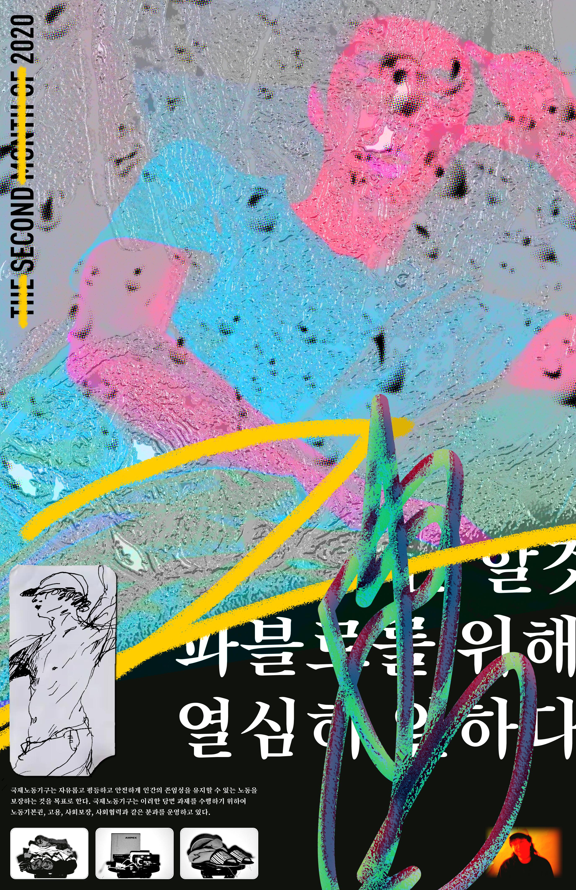
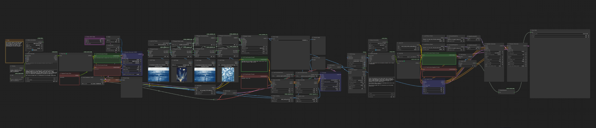
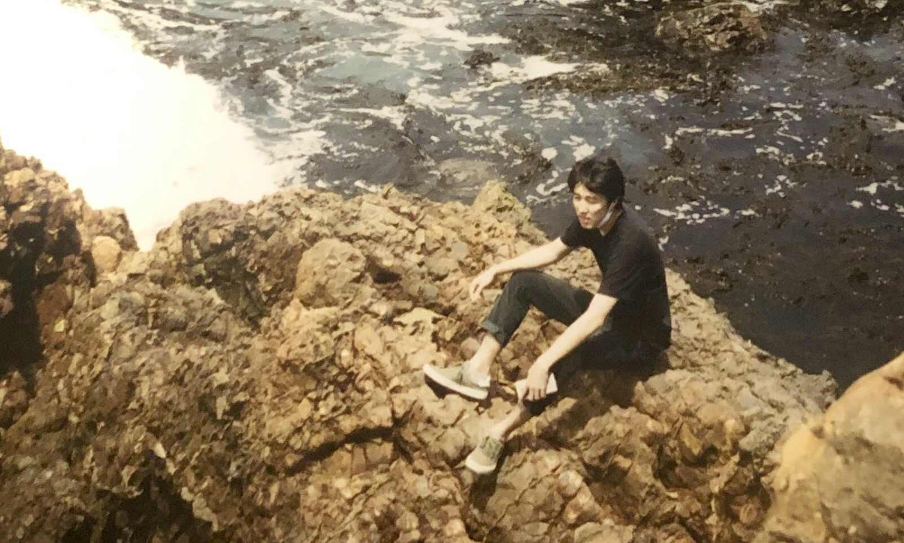

Game of Life
ComfyUI Local AI
10/15/2025
I have been developing this workflow that uses ComfyUI to generate videos locally by combining SDXL image generation models, Wan 2.2 video gen, and Ollama Local LLMs. The workflow takes a text prompt as input and generates a sequence of images and prompts that are then compiled into a video file. The examples include workflows for single image gen to i2v and multi image gen to f2f video. The idea is to generate variations on very specific image aesthetics by leveraging ipadapter, controlnet, and lora into newer video workflows while automating the prompting of the animation through the use of guided local LLMs. This workflow tries to replicate locally, video outputs with style parameters similar to paid online services like Sora, Runway, and Google Flow. It is recommended to run this on 16gb of VRAM or higher.
Ollama is required for this workflow to work. It is a local LLM hosting service that allows you to run various large language models on your own machine. Once installed, you can use the Ollama custom nodes downloadable from ComfyUI Manager to interact with the models hosted by Ollama. I use Gemma3:4b for this workflow because it has image vision to describe and prompt the animation for the video ouput and it operates quickly, but any viable llm would suffice with proper guidance.
You can add or remove as many ipadapter nodes as you need to get the desired effect. This also applies to the Lora models. The images are loaded from the folder file path you provide in the Load Image List From Dir node from the ComfyUI-Inspire Pack. It goes through each image in the image sequence provided in the folder (img_1.png, img_2.png...) per generation allowing for more consistency or variation on output depending on the consistency of images that are put in the img sequence.
Personally I think this workflow is great for targetting specific aesthetics and styles that are hard to achieve with general video gen models. By leveraging the strengths of IP Adapter and ControlNet to guide the image generation, you can achieve a high level of stylistic control over the final output. This is especially useful for artists and creators who want to maintain a consistent visual theme throughout their videos (Illustration, Material/Texture, Photography styles, etc).
Example inputs and outputs are shown on the side.

▲ DESCRIPTION OF THE FUCKING IMAGE ▲

▲ DESCRIPTION OF THE FUCKING IMAGE ▲

▲ DESCRIPTION OF THE FUCKING IMAGE ▲
